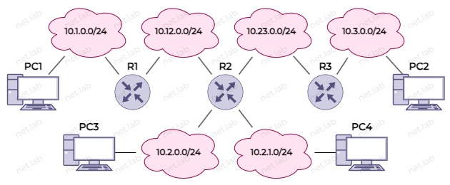

Статическая маршрутизация
Зачем нужна маршрутизация
Для передачи сетевых пакетов необходимо знать, куда отправить его дальше. Также путей доставки может быть несколько, поэтому маршрутизатор определяет наилучшие пути до получателя.
Маршруты - пути передачи пакетов.
Таблица маршрутизации - место, где хранятся лучшие маршруты до сетей назначения.
В качестве маршрутизатора могут быть отдельные устройства, linux компьютер/сервер и т.п.
Виды маршрутизации
- Статическая
- Динамическая
В данной статье рассматривается только статическая маршрутизация.
Таблица маршрутизации (ТМ)
Каждый маршрут в таблице состоит из:
- адрес и маска сети назначения,
- адрес шлюза (gateway), если это не напрямую подключенная сеть (directly connected),
- административная дситанция/метрика,
- выходящий интерфейс.
Заполнение таблицы
Таблица заполняется вручную или процессами специальных протоколов. Далее рассматривается ручное заполнение.
Метрика маршрута
- Это стоимость маршрута,
- Может быть изменена, но обычно задается автоматически и не изменяется,
- Чем меньше значение стоимости, тем предпочтительнее маршрут.
Административная дистанция (АД)
- Это "степень доверия" к маршруту,
- Чем меньше значение, тем предпочтительнее маршрут,
- Напрямую подключенная сеть имеет наименьшее значение - 0,
- Статический маршрут - следующий по "степень доверия" - 1,
- Протоколы динамической маршрутизаиции имеют свои значения, поэтому маршруты некоторых протоколов являются более предпочтительными,
- Если есть 2 маршрута в одну сеть (статический и динамический), то будет выбран статический, т.к. у него АД будет меньше.
Маршрут по умолчанию
Это такой маршрут, куда нужно отправлять пакет в случае, когда устройство не знает никакой информации о сети назначения.
Пример

⚠️ Задание IP-адресов не рассматривается, см. более ранние статьи. Чтобы ПК мог "пинговать" устройства из других сетей, нужно задать ему шлюз.
Cisco
Вариант "в лоб"
conf t
ip route 10.23.0.0 255.255.255.0 10.12.0.2
ip route 10.3.0.0 255.255.255.0 10.12.0.2
ip route 10.2.0.0 255.255.255.0 10.12.0.2
ip route 10.2.1.0 255.255.255.0 10.12.0.2
end
conf t
ip route 10.1.0.0 255.255.255.0 10.12.0.1
ip route 10.3.0.0 255.255.255.0 10.23.0.3
end
conf t
ip route 10.1.0.0 255.255.255.0 10.23.0.2
ip route 10.12.0.0 255.255.255.0 10.23.0.2
ip route 10.2.0.0 255.255.255.0 10.23.0.2
ip route 10.2.1.0 255.255.255.0 10.23.0.2
end
sh ip route - отобразить ТМ.
Использование маршрута по умолчанию
Также в данном случае возможен вариант использования маршрута по умолчанию (0.0.0.0/0), т.к. у нескольких маршрутов одинаковые шлюзы по умолчанию.
conf t
ip route 0.0.0.0 0.0.0.0 10.12.0.2
end
conf t
ip route 10.1.0.0 255.255.255.0 10.12.0.1
ip route 10.3.0.0 255.255.255.0 10.23.0.3
end
conf t
ip route 0.0.0.0 0.0.0.0 10.23.0.2
end
Для ⚠️ R2 маршрут по умолчанию создавать не целесообразно, т.к. все статическе маршруты ведут в разные стороны.
Суммарный маршрут
Т.к. некоторые маршруты похожи друг на друга, и они ведут через один шлюз, то их можно объединять.
На R1 есть следующие маршруты, и возможен такой вариант их суммирования:
10.23.0.0: 10.00010111.00000000.0
10.3.0.0: 10.00000011.00000000.0
10.2.0.0: 10.00000010.00000000.0
10.2.1.0: 10.00000010.00000001.0
Итоговый маршрут: 10.0.0.0/11, т.к. только выделенная часть является общей для всех из них.
Возможен также такой вариант:
10.23.0.0: 10.00010111.00000000.0
10.3.0.0: 10.00000011.00000000.0
10.2.0.0: 10.00000010.00000000.0
10.2.1.0: 10.00000010.00000001.0
В итоге будет 2 маршрута с одинаковым шлюзом: 10.23.0.0/24 и 10.2.0.0/15.
Еще вариант:
10.23.0.0: 10.00010111.00000000.0
10.3.0.0: 10.00000011.00000000.0
10.2.0.0: 10.00000010.00000000.0
10.2.1.0: 10.00000010.00000001.0
В итоге будет 3 маршрута с одинаковым шлюзом: 10.23.0.0/24, 10.3.0.0/24 и 10.2.0.0/23.
Аналогично суммарные маршруты вычисляются на остальных маршрутизаторах.
Linux
Включить ip_forward (см. документацию или другую статью).
ip route add 30.0.0.0/24 via 20.0.0.2
ip route add 10.0.0.0/24 via 20.0.0.1
Либо вариант через маршрут по умолчанию
ip route add default via 20.0.0.2
ip route add default via 20.0.0.1
ip route - отобразить ТМ.
После перезагрузки маршруты пропадут. Чтобы они сохранились, нужно добавить маршрут, например, через файл /etc/network/interfaces (см. документацию).
Используя данный сайт и его ресурсы, вы соглашаетесь с политикой и соглашениями сайта.
©️ Оформление, изложение, медиаматериалы. И. Попов, 2020-2025
Сделано с помощью Material for MkDocs.